A Vic, Osona i online
Un espai per a la Psicoteràpia i l'Atenció Plena
per viure en l'… AQUÍ I ARA
Psicòlegs, terapeutes humanistes i mentors de Mindfulness a Vic, Osona i online.
Si necessites ajuda, estem al teu costat.
T'escoltarem i t'orientarem sobre el que et pot anar millor.
- Psicoteràpia per a adults
- Teràpia de parella
- Psicoteràpia online
- Mentoria en Mindfulness
- Tallers i formacions
Un espai per prendre consciència del que et passa i decidir com vols respondre-hi.
A L'Espiral d'Osona treballem des de la psicologia humanista: psicoteràpia individual i de parella, i grups i tallers d'Atenció Plena (mindfulness).
T'ajudem a veure amb més claredat les teves dificultats i els teus recursos, perquè puguis triar tu com hi vols respondre.
Com et podem acompanyar
-
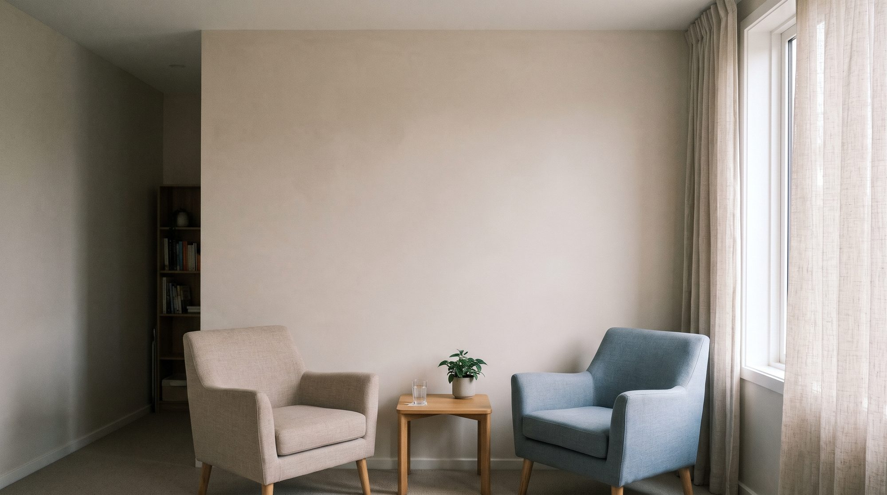
Psicoteràpia individual
Psicoteràpia humanista
Un espai per treballar el que et preocupa: ansietat, dols, relacions, família, feina, autoestima o moments de canvi.
Més informació -
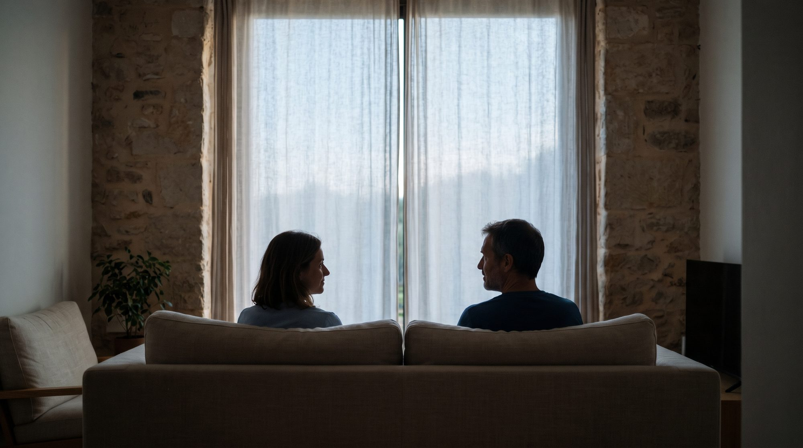
Teràpia de parella
Teràpia sistèmica
Un espai per mirar, amb un professional, com us relacioneu i buscar maneres més sanes de comunicar-vos i de resoldre els conflictes.
Més informació -
Psicoteràpia online
Siguis on siguis
La psicoteràpia individual i la de parella també es poden fer online, de la mateixa manera que a la consulta de Vic.
Més informació -
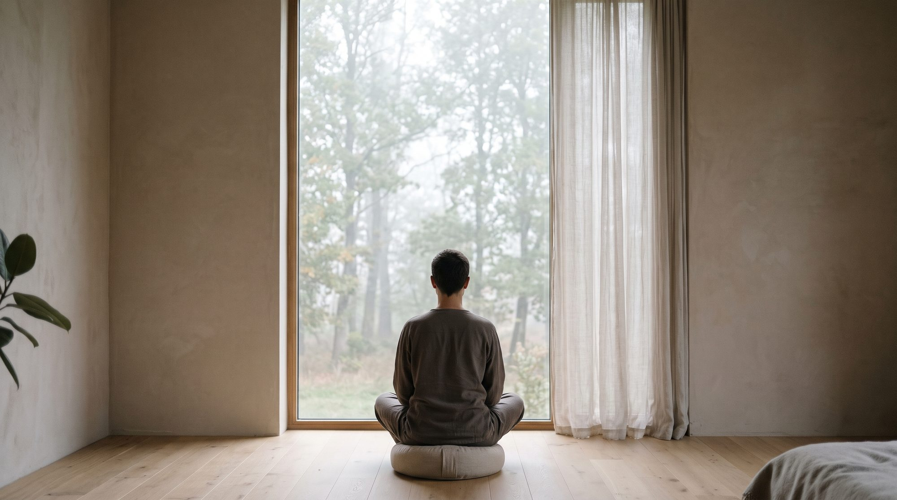
Mentoria en Mindfulness
Presència, consciència i responsabilitat
Acompanyament per aprendre a practicar l'Atenció Plena i portar-la al dia a dia, per respondre amb més calma i claredat a les dificultats.
Més informació
Què et pot aportar la teràpia?
- Ser més conscient de les teves emocions i pensaments.
- Reconèixer què pots fer, i quan i com, davant les dificultats d'ara i les que vinguin.
- Parlar-te amb menys crítica i amb més acceptació i comprensió.
- Relacionar-te amb els altres de manera més empàtica, assertiva i compassiva.
- Notar canvis no només en allò que et porta a teràpia, sinó també en altres àmbits de la vida.
- Sentir que la teva vida té més sentit.
Propers tallers a Vic i online
En directe: presencials a la Ronda de Francesc Camprodon, 25, 1r 1a, de Vic, o online des de casa.
-
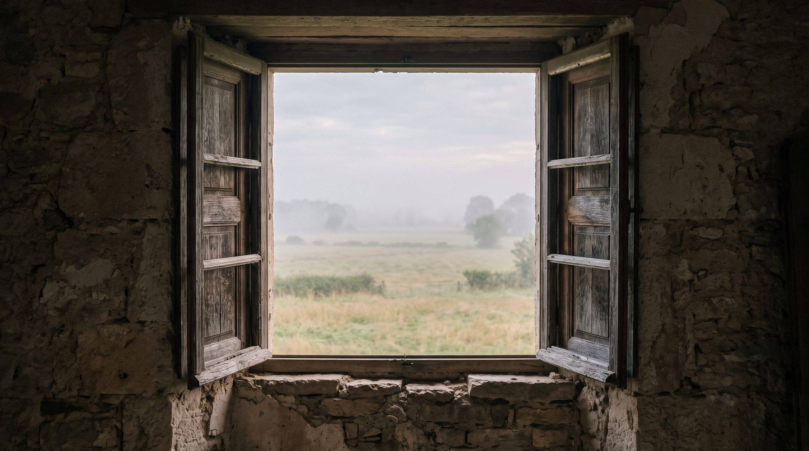
Trencant patrons de pensament
Entén la teva ment i recupera la teva llibertat
Moltes reaccions de cada dia neixen de creences que actuen en pilot automàtic i ens esgoten. Taller pràctic per aprendre a reconèixer aquests patrons i a frenar-los abans que t'atrapin.
Més informació -
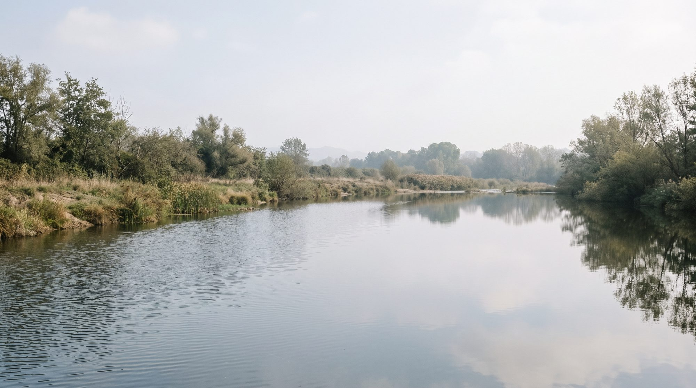
Gestiona el soroll mental
Frena la reactivitat i recupera el focus
Quan la ment no para de donar voltes, ens esgotem i reaccionem de manera impulsiva. Pràctiques d'Atenció Plena per fer un pas enrere i observar els pensaments sense deixar-te arrossegar.
Més informació -
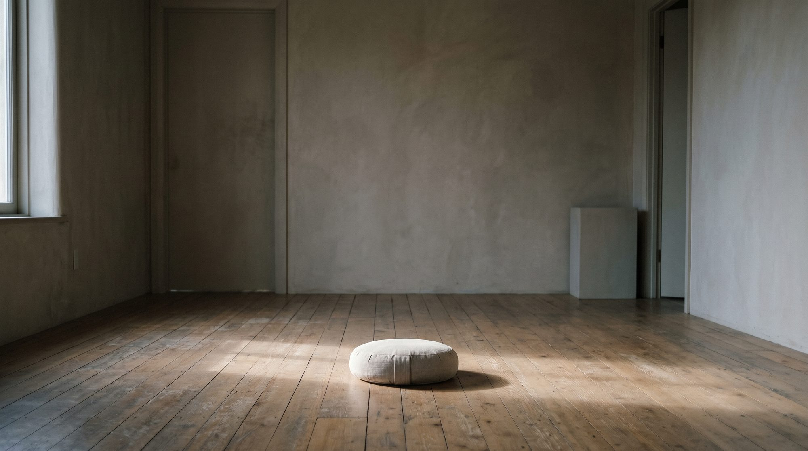
Desprograma la teva ment
Allibera't del pes de les inèrcies del passat
Sovint arrosseguem condicionaments que vam aprendre de petits i que avui ja no ens serveixen. Un espai per entendre d'on venen i començar a deixar-los enrere.
Més informació
Tallers de treball corporal a Vic
Presencials, a la Ronda de Francesc Camprodon, 25, 1r 1a, de Vic.
-
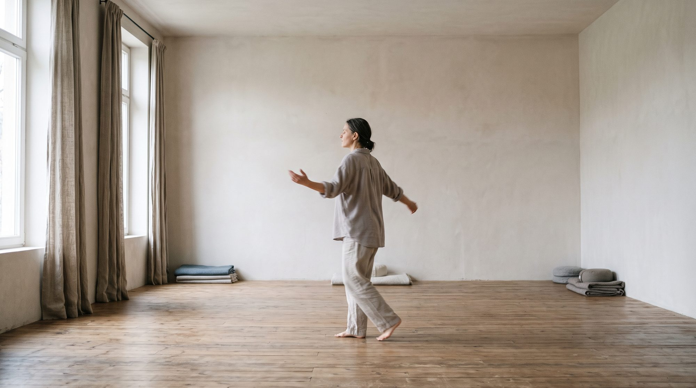
El Treball que Reconnecta i Moviment Autèntic
Quan no tot es pot pensar amb paraules
Hi ha coses que ens importen o ens preocupen i que costa posar en paraules. Un taller per escoltar què hi diu el cos, a través del moviment i de la presència d'un testimoni.
Més informació -
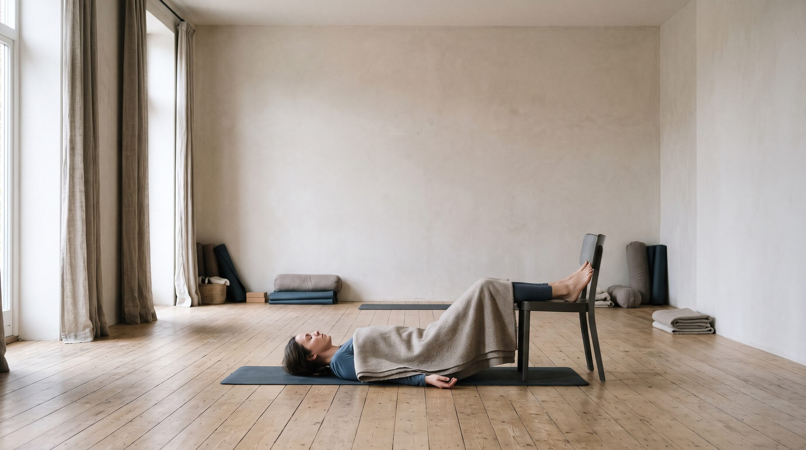
Ioga per a la regulació emocional
Una pràctica corporal per regular l'estrès, l'ansietat o el bloqueig, i recuperar la sensació de calma i seguretat
Quan fa temps que vivim amb estrès o ansietat, no n'hi ha prou amb dir-nos que ens hem de relaxar. Una manera lenta i respectuosa de practicar ioga, centrada en escoltar el cos.
Més informació -
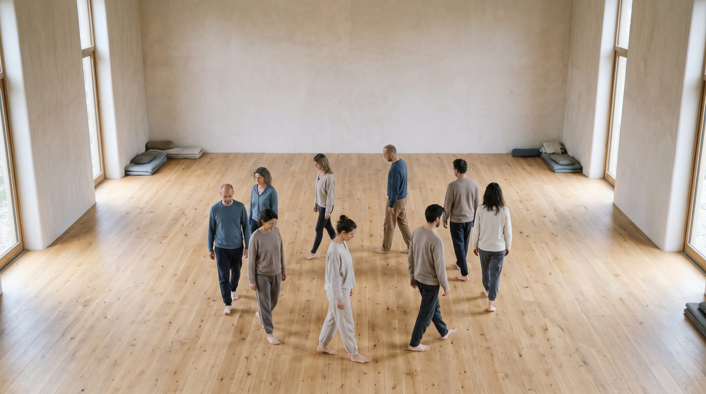
L'Espiral del Treball que Reconnecta i el Moviment Autèntic
Del cos individual al cos en relació
Un recorregut de 8 sessions per explorar amb el cos les preguntes del Treball que Reconnecta, del moviment individual al grup.
Més informació
Cursos gratuïts de Mindfulness
Gratuïts, online i al teu ritme.
-
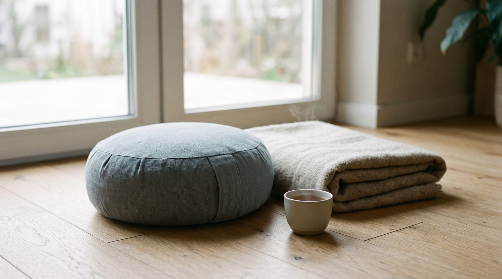
Curs gratuït onlineCurs introductori d'Atenció Plena [Mindfulness]
Una entrada clara i progressiva al Mindfulness.
De pràctiques senzilles (fer una pausa, relaxar el cos, tornar als sentits, la respiració) a una presència més estable i amable, pas a pas.
Inscripció gratuïta -
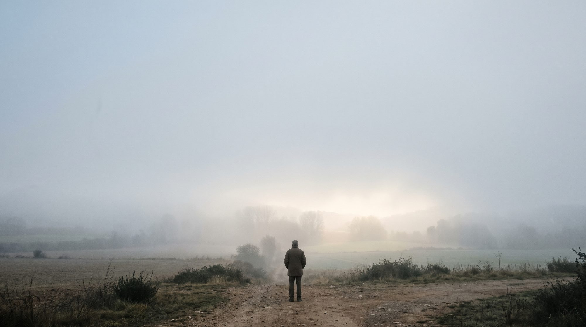
Curs gratuït onlinePor, ansietat i Atenció Plena
Per trobar recursos interns de seguretat i connexió i poder estar present quan apareixen la por i l'angoixa. Aprendrem a respondre en lloc de reaccionar.
Més informació -
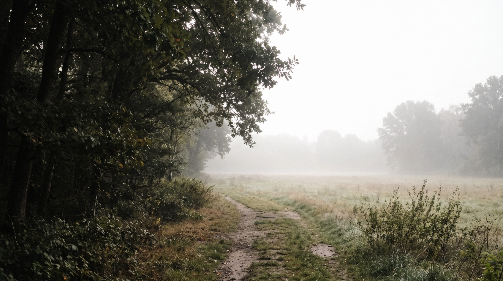
Curs gratuït onlineDeslliurar-se de creences i patrons de pensament negatius
Per adonar-te de les creences que et fan patir i començar a deixar-les anar.
Més informació -
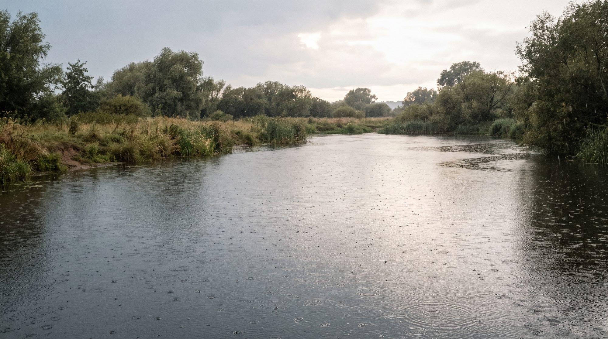
Curs gratuït onlineTransformar el patiment amb Atenció Plena
Per acompanyar les situacions difícils amb la pràctica R.A.I.N.: Reconèixer, Acceptar, Investigar i Nodrir.
Més informació
Compromesos amb la salut individual i la salut comunitària
A L'Espiral, conjuntament amb Elara Social, entenem que el benestar no depèn només del que passa dins de cada persona, sinó també dels vincles, les comunitats i les condicions en què vivim.
Per això impulsem les 7 passes cap a l'Esperança Activa: quatre recorreguts gratuïts per abordar preocupacions personals, socials i ecològiques.
-
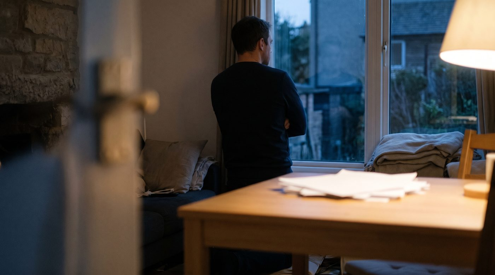
Curs gratuït onlineQuan sostenir la vida es fa difícil
Per a les preocupacions per la feina, l'habitatge, la precarietat o la incertesa econòmica: de la impotència a un primer pas possible.
Més informació -
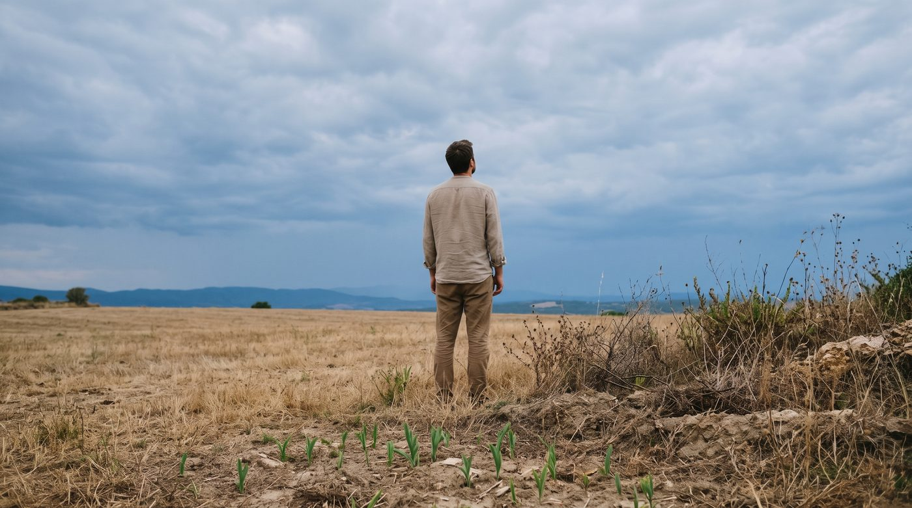
Curs gratuït onlineQuan el món et preocupa
Per donar espai a la preocupació pel clima i el futur del planeta sense que la desesperança t'atrapi, i trobar el teu paper en una resposta col·lectiva.
Més informació -
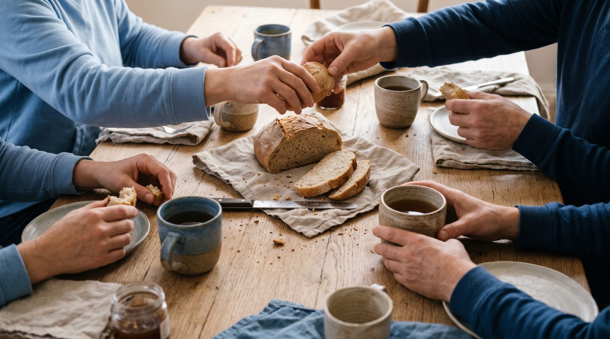
Curs gratuït onlineQuan cuidar-nos és una tasca col·lectiva
Per al malestar, la soledat o la manca de suport, des d'una mirada que no redueix la salut mental a l'individu: vincles, xarxes i suport mutu.
Més informació -
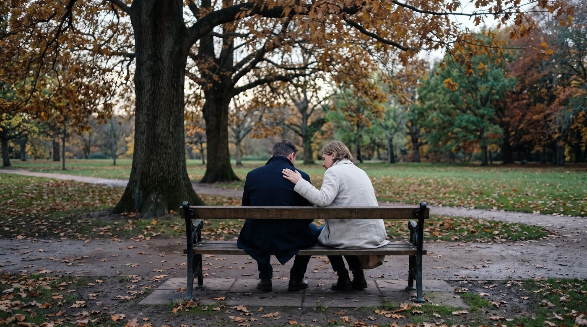
Curs gratuït onlineQuan la vida et desborda
Per a moments difícils (ansietat, dols, separacions, cansament emocional): aturar-se, posar paraules al que preocupa i trobar un primer pas possible.
Més informació
Recursos
-

-
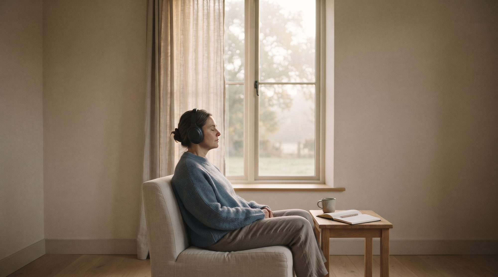
Meditacions guiades
Àudios de meditacions i exercicis de Mindfulness al nostre canal de Telegram, per escoltar-los quan els necessitis.
Més informació -
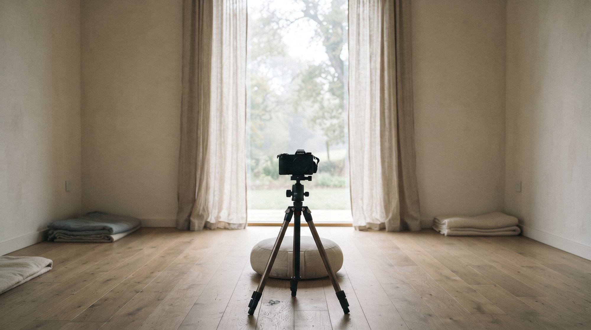
Canal de YouTube
Meditacions guiades i sessions teòriques i pràctiques per conèixer-te millor.
Més informació
Opinions de pacients i alumnes als nostres perfils de Google Maps.
-
L'Espiral d'Osona
Ronda de Francesc Camprodon, 25, 1r 1a, Vic (Osona)
-
L'Espiral del Prat
-
L'Espiral de Barcelona